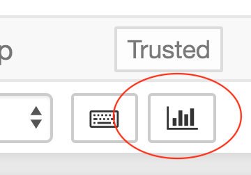

Slideshows¶
Any Jupyter notebook is ready to be converted into a slideshow. The main thing to keep in mind is that each cell can potentially be a slide, so don’t make your cells too big. Otherwise, they might not display well.
Note:¶
In a Jupyter Book, this may not display well. You should run it in the Callysto Hub to really see it. Click on the “Open in Callysto” button above.
There is an icon on the menu bar of your notebook (like this notebook) that looks something like a bar chart. Here is a picture of it, zoomed in and circled in red.
Clicking on that icon toggles your notebook into slideshow mode.
Simple, right?
To get out of slideshow mode, you just click on the big X onthe top left corner of your slideshow.
Next Step:¶
To decide which cells will become slides in your slideshow, you first must go to the “View” menu at the top of the notebook, and select the item “Cell Toolbar –> Slideshow.”
Final step¶
Now you go through each cell in the notebook, and select what “Slide Type” it should be. The choices are
Slide
Subslide
Fragment
Skip
Notes
Experiment!¶
Rather than me telling you what these are, you should just experiment yourself. Use the arrows on the screen to navigate.
This is a slide.¶
Hi there! Try the down arrow!
This is a subslide.¶
Hi there!
This is a skipped slide.¶
Hi there!
Final note¶
You likely will want to redo many of your cells, so they fit in the slideshow nicely. Note that you can edit and run cells WHILE IN SLIDESHOW mode. Very cool – can’t do that in PowerPoint!
The end!!¶